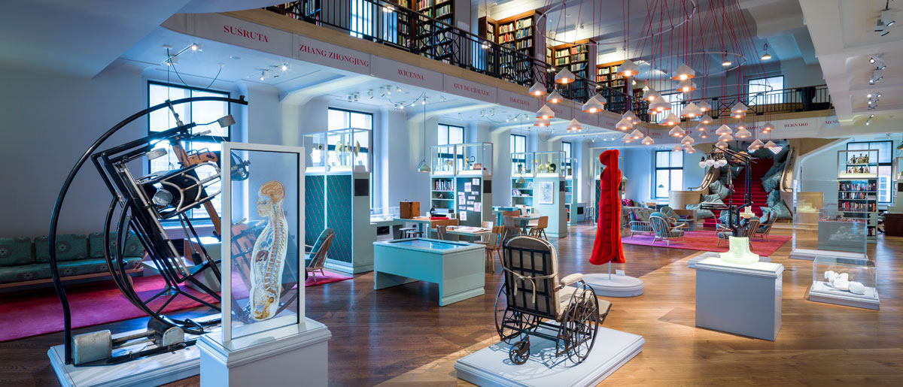
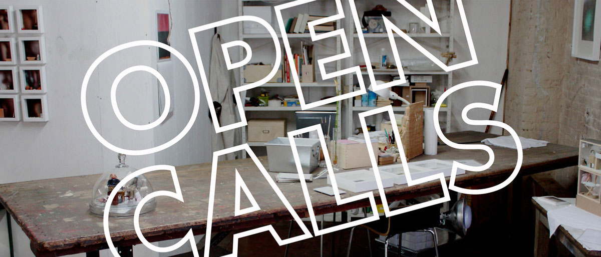

Reading options
For the best reading experience, simply keep scrolling. If you’d prefer to have a copy in another format, you can download a PDF.
Contents
Introduction
New Beginnings
“A magic dwells in each beginning.”
Is there anything more exciting or scary as embarking on the journey of higher education? Yes, yes there is. Like falling in love. Or getting your work seen by the masses of people. Or getting acquainted with a new city. While we can’t help much with the former two, nor can we give you fool-proof ways to ace your way through academia, getting acquainted (or re-acquainted) with a place you now have to call home is something we’re experts on. Each of us at ArtRabbit has gone through the daunting task of navigating the cultural terrain of new cities and the art world at large as wide-eyed uni students, and we’ve all come out the other end full of wisdom that your school administration could only dream of imparting.
This how-to guide (or where-to guide) isn’t just for finding places to see art. This is about getting the most out of your formative years and the most from the city you’ll call home, whichever city that might be.
We’ve divided our guide in two sections: The first is all about specific locations. We curated the London chapter and worked with some of the most interesting local organisations to introduce other UK cities. The second is an invaluable resource highlighting organisations, books, films, inspiring voices and more to take with you wherever you are. Read on to find out everything you need to know in order to have a smooth transition into uni life and the art world.
Part 1
Navigating the City
While we’ve gathered feats and highlights of various cities from all corners of the UK, this is in no way a comprehensive list of all the places to find art and culture. The UK has so many amazing spots to explore and events to attend that a single guide could never do it full justice. If you’re located in a city that we didn’t list below, you can hop onto the ArtRabbit app or website, where you’ll be able to see events and exhibitions happening near you.
London
London
Art Trails
The best way to get to know a place is by walking (or hopping, if you’re enthusiastic like us). With London being an endlessly walkable city and so chock-full of inspiring art venues, we’ve created some art trails throughout the city of London to get you acquainted with each neighbourhood. They’ve been meticulously field-tested, so we can guarantee that they’re an amazing way to explore a borough.
Central
Shoreditch / Hoxton
Bethnal Green
Bethnal Green
South East London – New Cross, Lewisham, Deptford
Hampstead
Bermondsey
London
Freebies
One of the best things about art is that you can experience it freely no matter how little you have in your savings account. When you’re experienced enough, you’ll be able to organise your social calendar around the free wine at exhibition openings. Until then, use this freebies guide to find all the art that you can consume without costing you anything.
Most commercial galleries will have rotating exhibitions that change every few weeks, and they’ll likely be free to attend. Depending on the particular gallery, exhibition openings tend to fall on Thursday and Friday evenings, and those are great times to network with like-minded individuals while sipping free booze. Want to stay in the know? Be sure to subscribe to our location-specific weekly newsletters to get all the must-attend events near you beamed right to your inbox.
Subscribe here
Project spaces tend to have artist-led initiatives rather than in-house curators. While the events that happen at such spaces vary in their scope, they’re largely free admission (or some by donation), and they house some spectacularly interesting projects that are experimental in nature.
Regular collections at several larger museums and galleries will often do free admission, while their special exhibitions tend to have pricey entrance fees. Venues that fall under this camp are the Tate, the National Gallery and V&A.
Other freebies include public art, which is a great way to navigate through any city. The City of London is home to an extensive collection of public artworks – from statues and memorials of historic significance to contemporary pieces by some of the world’s most renowned artists.
Find public art
More fun freebies can be found with Tate Lates, happening the last Friday of every month at Tate Modern; at other less frequent times at Tate Britain; and Friday Late at the V&A, also happening every last Friday of every month (except May and December). With a perfect concoction of endless art and delicious cocktails, Lates are the perfect events to give a first date impression of being both cultured and fun.
-
Late at Tate
VD 2018/19
And if you prefer some (sort of) fresh city air over boozy artsy venues, Sculpture in the City is an annually rotating programme of sculptures scattered across London, each by internationally acclaimed artists. You can forge your own walking path from one to the next to create a make-your-own-art-adventure type of game.
-
Sculpture in the City
Current display until April 2019
London
Sweet study spots
Library air getting stale? 2000 words still outstanding on that paper due next week? We know that a change in environment can help get those creative juices flowing, so we’ve found a few sweet spots scattered around the city to help reinvigorate your will to study. Most of them offer WiFi and good coffee AKA just about everything you need to get your uni work done.
-
British Library
Monday - Thursday 9:30 am - 8 pm; Friday 9:30 am - 6 pm; Saturday 9:30 am - 5 pm; Sunday 11 am - 5 pm
Free WiFi available in the Library's London and Boston Spa Reading Rooms, and in all their public areas. -
The Barbican Library
Open Monday, Wednesday 9:30 am - 5:30 pm; Tuesday, Thursday 9:30 am - 7:30 pm; Friday 9:30 am - 2 pm; Saturday 9:30 am - 4 pm, Sunday and Bank Holidays Closed
Free WiFi and computers with internet access. -
Barbican Centre
Monday - Saturday 9 am - 11 pm; Sunday 11 am - 11 pm; Bank Holidays noon - 11 pm
Free WiFi in the foyers. -
The National Art Library - V&A
Tuesday - Thursday 10 am - 5:30 pm; Friday 10 am - 6:30 pm; Saturday 10 am - 5:30 pm; Sunday - Monday Closed
-
Cafe OTO (Coffee Shop, Venue)
Monday - Friday 8:30 am - 5 pm; Saturday 9:30 am - 5 pm; Sunday 10:30 am - 5pm
Free WiFi. -
Wellcome Collection: A fresher perspective on life
 -
Wellcome Collection Reading Room
Tuesday and Wednesday 10 am - 6 pm; Thursday 10 am - 10 pm; Friday and Saturday 10 am - 6 pm; Sunday 11 am - 6 pm
-
Wellcome Collection Library
Monday - Wednesday 10 am - 6 pm; Thursday 10 am - 8 pm; Friday 10 am - 6 pm; Saturday 10 am - 4 pm; Sunday Closed
Free WiFi available throughout. -
TY Seven Dials (Coffee Shop, Venue)
Monday - Friday 8 am - 6 pm; Saturday 9 am - 6 pm; Sunday 10 am - 6 pm
Free WiFi. -
The Peckham Pelican (Arts Venue, Coffee Shop, Bar)
Monday 11 am - 4 pm; Tuesday - Saturday 11 am - 11 pm; Sunday 11 am - 10 pm
Free WiFi -
The Rose Lipman Building Lobby
Monday - Thursday 9 am - 4 pm; Friday 9 am - 10 pm; Saturday 10 am - 10 pm; Sunday Closed
Free WiFi -
The Royal Institution Café
Monday - Friday 9 am - 3:30 pm
Free WiFi
London
Alternative and art cinemas
Sure, Marvel films have their mass appeal, but sometimes we’re in the mood for something a little less mainstream. When it comes to indie and alternative, with itineraries full of interesting documentaries and experimental films, these cinemas do it best.
London
Adornments for your calendar
In the 2018/19 season, these important events are must-attends for every art student and (emerging) art professional. Keep this list with you throughout the year, or save them on ArtRabbit to get reminders before they start so that your event calendar will never miss a beat.
September
-
Mika Rottenberg, the inaugural exhibition at Goldsmiths Centre for Contemporary Art
8 Sep 2018 – 4 Nov 2018
-
Christian Marclay. The Clock at Tate Modern
14 Sep 2018 – 20 Jan 2019
Tip: There will be a series of overnight 24-hour screenings on 6 October, 3 November and 1 December 2018. -
Deptford X
21 Sep 2018 – 30 Sep 2018
-
Turner Prize Exhibition at Tate Britain
26 Sep 2018 – 6 Jan 2019
October
-
Serpentine Pavilion 2018 Designed by Frida Escobedo
Until 7 Oct 2018
-
Frieze and Frieze Masters
4 Oct 2018 – 7 Oct 2018
-
Art Licks Weekend, various locations
Opening: 4 Oct 2018, 6 pm - 9 pm; running 5 Oct 2018 – 7 Oct 2018
-
Strange Days: Memories of the Future at the Store
2 Oct 2018 – 19 Dec 2018
-
1:54 Contemporary African Art Fair at Somerset House
4 Oct 2018 – 7 Oct 2018
January
-
Lumiere London 2019
TBC, mid-late January
-
London Art Fair
16 Jan 2019 – 20 Jan 2019
-
Condo London
TBC
May
-
Block Universe
25 May 2019 – 2 Jun 2019
-
Degree Shows
TBC, between May and October
See past editions here
June
-
Serpentine Pavilion
TBC, between June - October 2018
-
Lift Festival
TBC, June/July
-
Lift Festival
TBC, June/July
July
-
Art Night
TBC, one Saturday in July
Cardiff
by Artes Mundi
Cardiff
Art Trail
Pop by National Museum Cardiff near Cardiff University for one of Europe’s finest art collections, Ffotogallery opposite Cardiff Castle for a gallery dedicated to photography and g39 in Roath, a converted warehouse and artist-run space. In Queens Arcade shopping centre, you’ll find two DIY art spaces making good use of disused shop units – ArcadeCardiff and Three Doors Up. A slow-ish 20-minute walk to Canton in the west of the city will get you to Chapter, Wales’ largest arts centre and a major producing gallery exhibiting the likes of Rose Wylie and James Richards.
Cardiff
Sweet study spots
Hard Lines Coffee and Vinyl in the Castle Emporium, a shabby chic alternative shopping mall, Yr Hen Llyfrgell (The Old Library), Little Man Coffee (great coworking spot and very cheap breakfast) are all great places to work, eat and drink and get away from the library.
-
Hard Lines Coffee and Vinyl in the Castle Emporium
Monday - Friday 8 am - 5:30 pm; Saturday 9 am - 5:30 pm; Sunday 10 am - 4 pm
-
Yr Hen Llyfrgell (The Old Library)
Monday - Saturday 9 am - 5 pm, Sunday 10 am - 4 pm
-
Little Man Coffee
Monday - Friday 7 am - 8:45 pm, Saturday and Sunday 9 am - 5 pm
Cardiff
Alternative and art cinemas
The cinema at Chapter Arts Centre is unrivalled in the city, offering indie and world cinema alongside curated seasons, rare re-issues and film festivals. In Penarth, a Victorian seaside town just south of Cardiff, check out the Penarth Pier Pavilion, a cinema situated on a 19th-century pier.
Cardiff
Street art
Remnants of the last Open Walls street art festival can be spotted around the city centre and Roath especially. Not even many locals know that the chess boards at the snack island in The Hayes are by Bedwyr Williams, and you can’t miss S Mark Gubb’s giant flashing lightning bolt outside the Admiral skyscraper.
Cardiff
Adornments for your calendar
October marks the beginning of Artes Mundi 8, the UK’s largest contemporary art prize at National Museum Cardiff. Made in Roath also starts up around this time, an artist and community-led arts festival in the vibrant inner city suburb of Roath. April 2019 sees the return of Diffusion, Cardiff’s international photography festival and Experimentica, a 5-day live, time-based and performance art festival at Chapter and spaces across the city.
-
Made in Roath
14 Oct 2018 – 21 Oct 2018
-
Artes Mundi Exhibition
27 Oct 2018 – 24 Feb 2019
-
Diffusion
1 Apr 2019 - 30 Apr 2019
-
Experimentica
TBC 2019
Brighton
by Phoenix Brighton
Phoenix Brighton was established by artists in 1992. Since then it has been providing affordable studio space and presenting a year-round programme of contemporary exhibitions, art courses and events. Today, it is the largest visual arts organisation of its kind in the region, managing workspace for over 140 artists and serving as a hub for visual arts production, discourse and learning. Based in central Brighton, it brings together professional artists and the wider public in a welcoming and creative environment.
Brighton
Art Trail
-
Phoenix Brighton
Phoenix Brighton is the largest provider of studio space in the South-East, with over 100 artists renting studio space in the building. The ground floor galleries host regular exhibitions of contemporary visual art, collaborating regularly Brighton Digital Festival and Brighton Photo Fringe.
-
ONCA (One Network for Conservation and The Arts)
Just across the road from Phoenix, ONCA (One Network for Conservation and The Arts) is the city’s gallery for combined arts and ecology, emphasising artwork that deals with nature, the environment and climate change.
-
Fabrica
A deconsecrated church, Fabrica is the place to go to see large contemporary installation and sculpture in Brighton. They also run a varied film and events programme.
-
Brighton Museum and Art Gallery
As well as its permanent collection, Brighton Museum and Art Gallery host touring exhibitions, which in recent years have included work by Gilbert & George, Jeff Koons and Laura Ford. Don’t miss The Museum of Transology, the largest collection of artefacts and portraits representing trans people in the UK, which runs until April 2019.
-
Brighton Pavilion
Right next to Brighton Museum is one of the city’s most recognisable landmarks. Brighton Pavilion is an exotic and bizarre piece of architecture. Originally built as a naughty seaside getaway for King George IV, the building and interiors are an eye-catching mixture of Chinese, Indian and Regency styles.
-
The Regency Town House
The Regency Town House is a grade I listed terraced house and community museum that also hosts exhibitions and events.
-
Booth Museum
Formerly a private museum owned by a Victorian collector, the Booth Museum is now open to the public. Bring your sketchbook and lose an afternoon amongst the nineteenth-century taxidermy and stranger exhibit.
Brighton
Study Spots
Bright, spacious and filled with books, Jubilee Library is the obvious place to get some work done – but make sure you get there early, as desk space fills up quickly.
If you’re seeking somewhere a little more out-of-the-way, Hove Library is due to re-open after renovations in September 2018. Café Domenica, a local charity that employees young adults with learning disabilities, will be in residence on the ground floor.
The majority of tables in Presuming Eds, the second of Brighton’s Withnail & I themed cafes, are designated no-laptop zones. However, head to the back of the café for a dedicated laptop zone, where you can work shoulder to caffeinated shoulder with other students and freelancers.
If internet access isn’t an issue and the weather is good, head to the garden at the Friends Centre in the Lanes. It’s the perfect spot for undisturbed reading, writing and thinking.
-
Jubilee Library
Monday and Tuesday 10 am - 7 pm; Wednesday 10 am - 5 pm; Thursday 10 am - 7 pm; Friday to Saturday 10 am - 5 pm; Sunday 11 am - 5 pm
-
Hove Library
Monday and Tuesday 10 am - 5 pm; Wednesday 10 am - 7 pm; Thursday to Saturday 10 am - 5 pm
-
Presuming Eds
Monday - Friday 8 am - 7 pm; Saturday 9 am - 7 pm; Sunday 10 am - 7 pm
-
Friends Centre in the Lanes
Monday - Thursday 9:30 am - 5 pm; Friday and Holidays 9:30 am - 3 pm.
Brighton
Alternative and art cinemas
The city boasts two Picturehouses, the beautiful old Duke of York’s (the oldest continuously operating cinema in the UK) and her younger sister, Dukes at Komedia in the North Laine. Check out their Student Membership for free tickets and popcorn deals. If you’re craving a more traditional multiplex, you can choose between the Odeon or Cineworld. Don’t overlook Brighton’s independent film exhibitor scene, especially if your taste runs to the arthouse, foreign or repertory cinema. There are pop-ups screenings happening regularly in spaces all over the city, including Fabrica and The Old Market. Scalarama happens every year in September – a celebration of film in pop-up venues across the city.
Brighton
Street art
One of the many benefits of Brighton being such a walkable city is that you’re sure to stumble across street art when you’re out and about. Some notable examples include Bruce Williams’ Kiss Wall on the seafront, Twins, the obscure sound and light sculpture outside Churchill Square shopping centre and the AIDS memorial sculpture by Romany Mark Bruce. Brighton is also one of the UK’s graffiti capitals. Coming out of the station and turning down onto Trafalgar St, one of the first things you’ll see is the mural of dead musical icons splashed across one side of the Prince Albert Pub. Just underneath you’ll find a replica of Banksy’s Kissing Coppers, which was originally sprayed here back in 2004. Keep your eyes out for work by artists like Sinna One, SNUB and REQ – the latter also runs occasional walking tours of the city, focusing on its street art.
Brighton
Adornments for your calendar
-
CINECITY
9 Nov - 25 Nov 2018
CINECITY, Brighton’s film festival, runs in November each year, specialising in world cinema. Keep an eye out for previews, directors Q&As and associated exhibitions. You can even submit your own short film!
-
Burning the Clocks
21 Dec 2018
Organised by Same Sky, the people behind the Children’s Parade, Burning the Clocks is a unique community event that happens each year on the winter solstice. Participants make their own paper lanterns and parade through the city before burning their creations in a beach bonfire. March of the Mermaids is an annual parade celebrating the sea and spreading awareness of marine conservation issues. Merman, pirates and other sea creatures all welcome.
-
Artists Open Houses
Early May 2019 TBC
Happening annually in May, Artists Open Houses is your opportunity to nose around people’s home and studios. Discover your new favourite band before they make it big at The Great Escape, a music festival for emerging musical talent.
-
Brighton Fringe
2 May - 3 Jun 2019
Brighton Fringe – the Festival’s naughty younger brother and England’s largest arts festival. Anyone can put on an event in the Fringe, so you never know what you’re gonna get.
-
Brighton Pride
Aug 2019
Brighton wouldn’t be Brighton without Pride, happening each year in August. Brighton Festival is the granddaddy of all the city’s festivals. Kicking off with the weird and wonderful Children’s Parade (worth getting up early on a Saturday for), the festival features music, theatre, dance, circus, art, film, literature, debate, outdoor and family events throughout May, each year curated by a guest director.
Manchester
by CfCCA - Centre for Chinese Contemporary Art
Manchester
Art Trail
-
Castlefield Gallery
Located on the edge of Castlefield this small public art gallery exhibits the best upcoming and emerging artists, with an established record of showing artists who go on to national and international acclaim.
-
Manchester Art Gallery
A must see, located in the centre of Manchester. From historical collections to international contemporary art, Manchester Art Gallery brings fresh perspectives, encourages conversations and sparks debate.
-
KRAAK Gallery
Housed in the remains of a former derelict textile cutting room in Stevenson Square, Northern Quarter, KRAAK Gallery was established by local artists in 2009 and quickly established a reputation as a connective hub for innovative visual and performance artists.
-
CFCCA
CFCCA is unique. It is the national leader in bringing Chinese contemporary art and visual culture to a UK audience. For over 30 years CFCCA has led the UK in showcasing artists from China, Hong Kong, Taiwan and the diaspora, through a rich programme of exhibitions, events, residencies and collaborations.
-
Manchester Craft & Design Centre
Manchester Craft & Design aims to make contemporary visual art, craft and design accessible for all. Housed in a former Victorian fish market building, in the Northern Quarter, it houses some of the region’s most talented artists, designers and makers.
-
PS Mirabel
PS Mirabel is an artist-run project and exhibition space in the centre of Manchester. Open every Saturday 11 am to 5 pm and by appointment.
-
Paper Gallery
PAPER is an artist-run commercial art gallery based in Manchester.
Manchester
Study Spots
-
Chetham’s Library
Monday - Friday 9 am - 12:30 pm and 1:30 - 4.30 pm by prior appointment
Chetham’s Library has been in continuous use as a free public library for over 350 years. It is housed in a beautiful sandstone building dating from 1421 which was built to accommodate the priests of Manchester’s Collegiate Church.
-
TAKK
Monday - Friday 8 am - 5 pm; Saturday 9 am - 5 pm; Suhnday 10 am - 5 pm
TAKK coffee house is a café and creative space in Manchester’s Northern Quarter. Nordic-inspired, TAKK is the result of travels throughout Scandinavia and Iceland. It’s a big fat love letter to Reykjavik…its people and their love for the coffee bean.
-
Teacup Kitchen
Monday - Friday 9 am - 6 pm; Saturday 9 am - 7 pm; Sunday 9 am - 6 pm
Teacup Kitchen is an award-winning café and restaurant founded by Mr. Scruff. Located in the heart of Manchester’s Northern Quarter it provides a relaxed space for work or play.
-
Ziferblat Manchester
Ziferblat is the world’s first pay per minute sitting room, meeting room, co-working and events space. It’s the place where you can do as you please, like an extension of your own home.
-
Manchester Central Library
There is soft seating throughout the library where you can curl up with a book or use a laptop. For a more formal study area, there is the spectacular reading room on the first floor which has seating for over 300 people.
-
John Rylands Library
The John Rylands Library is a place of wonder. A glorious gothic backdrop for inspiration while you study. It was created more than 100 years ago as a gift to Manchester and its people. It is free to enter and open 7 days a week.
Manchester
Alternative and art cinemas
-
HOME
HOME is for curiosity seekers, for lovers of the dramatic, the digital and the deeply engaging; for radicals and reciprocators. HOME as an exhilarating programme of theatre, film, music, exhibitions and more.
-
Stockport Plaza
The Stockport Plaza Super Cinema and Variety Theatre is an award-winning example of the finest in 1932 Art Deco architecture which has been lovingly and painstakingly restored to her opening day condition. It often stages film festivals so keep an eye on their whats on pages.
Manchester
Street Art
Dotted throughout the Northern Quarter you can find stunning examples of street art from internationally acclaimed artists.
Manchester
Adornments for your calendar
-
Manchester Literature Festival
6 Oct - 21 Oct 2018
Manchester Literature Festival brings top names in the literary world to various venues throughout Manchester every October. This year sees the likes of Alexander McCall Smith, Kate Atkinson and Kate Mosse alongside Jo Brand and Graham Norton. They also host literary walking tours including the infamous Punk Poet Pub Tour.
-
Chinese New Year
Feb 2019
Chinese New Year is a time of great festivity in Manchester’s city centre and beyond. From dragon dancing and lantern parades to a three-day street food festival and free workshops. There is something for everyone.
-
Sounds from the other city
5 May 2019
Representing the best in new music from Salford and beyond.
-
Manchester International Festival
4 Jul - 21 Jul 2019
Manchester International Festival (MIF) is the world’s first festival of original, new work and special events. The Festival is staged every two years in Manchester, the next will be 2019.

Bristol
Spike Island is a great place to discover and connect with art, feel inspired and learn something new, especially if you’re a fresher in Bristol. We have a museum-sized gallery dedicated to celebrating the best of international contemporary art. Exhibitions are always free to enter, and our café is also a warm and welcoming space with free WiFi. We also host talks, workshops and more, all year round. Our building (a former tea packing factory) is home to a community of over 70 artists, makers, companies, designers, and UWE Fine Art studios. Every year over the early May bank holiday, our Open Studios weekend is the perfect chance to explore the workspaces and meet hundreds of creative people.
Here are some top recommendations from across Bristol, chosen for you some of our team - Rosie Dolton, Rosa Martyn and Polly Maxwell.
Bristol
Art Trail
-
Hamilton House Gallery
Hamilton House is a great community space in Stokes Croft with an eclectic programme: think contemporary art exhibitions meets aerobics classes! This building also has an interesting shop selling work by studio artists and other Bristol creatives.
-
The Ken Stradling Collection
The Ken Stradling Collection is a hidden gem: a private collection of hundreds of craft and design objects across three floors. You are encouraged to pick up and handle the objects and the volunteers who run it are so friendly and full of stories about Ken Straddling and his collection.
-
Bristol Museum and Art Gallery
The Bristol Museum and Art Gallery house a broad range of collections, from rare birds’ nests to African sculptures, and presents contemporary exhibitions including recently Grayson Perry’s The Vanity of Small Differences. Free entry for students every Wednesday.
-
Centrespace
Centrespace is free exhibition space which holds a variety of contemporary exhibitions often by local artists. They also have studios and offer the space to hire (keep it in mind for making exhibitions with your course mates.)
-
RWA
The RWA (Royal West of England Academy) offer free entry to Bristol students so you can enjoy an interesting mix of contemporary and historical exhibitions, including an annual Open Exhibition.
Bristol
Study Spots
-
Redland Library
Monday Closed; Tuesday 11 am - 5 pm; Wednesday 11 am - 7 pm; Thursday - Saturday 11 am - 5 pm Friday 11am to 5pm; Sunday Closed
A warm and welcoming community library in the Cotham area of Bristol, offering free space to work with WiFi and a small range of computers that are open access. It’s a nice place to go for a new perspective if you fancy a change from the university scene.
There are so many great cafes around Bristol to nestle in and get through your reading. Here’s a short selection, all with an arty-ethos, offering free WiFi and good coffee:
-
The Canteen at Hamilton House
Monday - Thursday 10 am - 12 am; Friday 10 am - 1 am; Saturday 11 am - 1 am; Sunday 11 am - 11 pm
-
Toast Room on Bedminster parade
Monday 9 am - 4 pm; Tuesday 8 am - 4 pm; Wednesday - Friday 8 am - 4 pm; Saturday 9 am - 4 pm; Sunday Closed
-
Exchange Café on Old Market
Monday - Friday 7:30 am - 5 pm; Saturday 10 am - 5 pm; Sunday noon - 5 pm
-
Café Kino on Stokes Croft
Monday - Sunday 10 am - 10:30 pm; Food is served until 9:30 pm; Breakfast is served until 1 pm
-
Arnolfini (The Front Room), Harbourside
Monday - Friday 9 am - 6 pm; Saturday and Sunday 10 am to 6 pm
If you’re looking for somewhere to take a packed lunch, try The Front Room at Arnolfini. This is a brilliant free working space with a library of art books and magazines.
Bristol
Alternative and art cinemas
-
Watershed
Always offering a diverse programme of film screenings, the Watershed often have live Q&As with directors and artists.
-
The Cube Microplex
In the heart of Stokes Croft, this non-profit cinema is run by a passionate community of volunteers, and is a uniquely intimate space. They also hold different events like live storytelling, comedy and music.
There are also some brilliant film festivals taking place across Bristol, including Encounters, Afrika Eye and Bristol Radical Film Festival. And keep your eyes peeled for artists’ film and video screenings at arts institutions too, including Arnolfini, Spike Island and The Brunswick Club.
Bristol
Freebies
As you probably know, Bristol is a city filled with street art. Some are well renowned such as the Banksy pieces (including one at the back of Spike Island) and every year the street art festival Upfest refreshes the walls of Bedminster’s shops and houses.
-
Upfest
TBC 2019
-
Royal Fort Gardens
Open every day of the year.
The University of Bristol has some incredible spaces to explore including Royal Fort gardens which is home to two public art pieces definitely worth seeing: Hollow by Katie Paterson (open during daylight hours. Opening times may vary during the summer months and holidays are at the discretion of the University of Bristol) and Follow me by Jeppe Hein.
Bristol
Adornments for your calendar
-
Encounters
25 Sep - 30 Sep 2018
Encounters is a short film and animation festival that takes place every year. In 2018 it starts on the 25 September so what better way to start your time in Bristol!
-
Afrika Eye
4 Nov - 12 Nov 2018
-
Bristol Radical Film Festival
13 + 14 Oct 2018
-
Bristol Creatives handy guide to Art Trails and Open Studios
When spring comes around, Bristol’s artists open their studios for you to peek inside. It is an amazing opportunity to meet the artist community, see new artwork, and get involved with workshops and more. From Jamaica Street to BV studios, Spike Island to Estate of the Arts. Many artists also open up their homes in the city’s popular annual arts trails, including Southbank and North Bristol.
-
Bristol Open Doors Days
September 2019 TBC
Bristol Open Doors Days is an incredible opportunity to get inside many of Bristol’s weirdest and most fascinating buildings. Booking is essential.
There are lots of outdoor markets in Bristol, perfect for picking up some homemade crafts and delicious street food. We particularly recommend The Tobacco Factory’s Sunday market and The Harbourside Market at weekends.
Leeds
The Tetley is a centre for contemporary art based in the stunning Art Deco surroundings of the former Tetley Brewery headquarters. Proudly investing in new and emerging artists to create work, we fill a unique niche within the Leeds art scene, offering a significant public platform alongside outstanding national and international work often presented in the UK for the first time.
Originated by artists, and established by the charity Project Space Leeds, artists remain at the centre of everything we do. For them, we are mentors and champions, providing support, investment and development time and space. To the public and our communities, we are a destination to explore new and exciting works, enjoy great food and drink from our Bar & Kitchen, and take part in workshops, talks and events, discovering their creative selves in the heart of Leeds’ South Bank cultural scene.
Leeds
Art Trail
-
The Henry Moore Institute
The Henry Moore Institute not only celebrate and preserve the legacy of one of Yorkshire's most famous artists, but they also support innovative sculpture projects and exhibitions from artists across the globe. They also host a range of popular talks and workshops for the art community in Leeds.
-
Leeds Art Gallery
Leeds Art Gallery - There's something for everyone in Leeds Art Gallery as work spans across all art forms, including both contemporary and historical art.
-
Assembly House
Assembly House was set up by graduates and aims to provide exhibiting space for upcoming artists. With a constant stream of exhibitions, there's a good chance you'll see work that has never been displayed before!
-
Serf
Run by passionate volunteers, Serf encourages peer learning and support for emerging artists in Leeds. Community is at the heart of what they do, so go see their exhibition space and support the Leeds art scene.
-
Basement Arts Project
With a wide and varied programme, Basement Arts Project is artist-run and presents exhibitions in a unique space in the basement of a terraced house in Beeston.
-
The Tetley
The Tetley - We had to include ourselves! We are a contemporary art space giving emerging artists a larger platform to showcase their work. Usually, we give artists their first solo show or bring international artists to the UK for the first time. We host around four exhibitions annually across all media and have a lively programme of events from screenings to talks throughout the year.
Leeds
Study Spots
-
Cafe 164 at Munroe House
Monday - Friday 8 am - 5pm; Saturday 10 am - 5pm; Sunday Closed
Cafe 164 at Munroe House is spacious, creative, atmospheric, and has excellent WiFi. They also make great food and drinks - ideal for a chilled afternoon to do some work outside of uni.
-
Studio 12
Monday - Wednesday 9 am - 7 pm; Thursday 9 am - 6 pm; Friday 9 am - 5 pm: Saturday 10 am - 5 pm; Sunday 11 am - 3 pm
Studio 12 at Leeds Central Library for 16-30-year-olds provides incredible equipment and expertise to help young people develop their creative talents from photography, music, video and software work. Pay them a visit.
-
Sheaf Street
Monday - Wednesday 8:30 am - 6 pm; Thursday 8:30 am - 7 pm; Friday 8:30 am - midnight; Saturday 9 am - midnight; Sunday 9 am - 4 pm
Just across the road from us, you'll find Sheaf Street, a cosy cafe with great snacks, an indie vibe, great WiFi, and even a small outdoor area. Spaces are limited.
-
The Tetley
Monday 9 am - 8 pm; Tuesday - Friday 9 am - 11 pm; Saturday 10 am - 11 pm; Sunday 10 am - 8 pm
The Tetley: Us again! In our Bar & Kitchen, we have excellent WiFi and multiple plug points. Come for a cup of North Star coffee, roasted just up the road, or even a pint of Tetley's, if work is stressing you out.
Leeds
Alternative and art cinemas
-
Hyde Park Picture House
Hyde Park Picture House has got to be on top of your cinema list. A Grade II listed building with original red velvet seats and a wonderful vibe, it shows a range of films from new blockbusters to original classics. It also offers child-, and even dog-friendly viewings.
-
Pavilion
Pavilion commission new film works, and install them in unusual places around the city. They also run a network for artists working with moving image and run Leeds Art Walk, a walking tour of exhibitions on the first Wednesday of every month.
-
Belgrave Music Hall and Canteen
Belgrave Music Hall and Canteen is a popular student bar that hosts a range of events. Now and then they like to celebrate with some classics by Wes Anderson or John Hughes... They do film screenings alongside themed quizzes and even craft stalls.
Leeds
Freebies
SEE JOY, pedestrian crossing: As part of the South Bank regeneration programme, Morag Myerscough designed a bright and colourful pedestrian crossing to reflect the creativity of the area between Sheaf Street and The Tetley
A City Less Grey, East Street Arts: “Compromising with colour means grey, and we have enough grey!” The project has seen both local and national artists creating art installations and events across five sites across Leeds city centre.
The Sun Shines Every Day Forever, Matthew Houlding: Just outside of The Tetley we have an interactive sculpture by Todmorden-based artist Matthew Houlding. Visitors are invited to picnic upon, play hide and seek and generally just play amongst this sculpture that reflects the desert architecture of California
Public Art Trail, Leeds University: To see multiple public art by world famous artists for free, head to Leeds University and download a free trail that takes you around the campus seeing work by artist such as Barbara Hepworth and Michael Lyons.
Leeds
Adornments for your calendar
-
Leeds Light Night
4 + 5 Oct 2018
Leeds Light Night out together two free evenings of spectacular light installations and events. The festival takes over multiple creative arts organisations across the city.
-
Yorkshire Sculpture International
22 Jun - 29 Sep 2019
Launching in June 2019, Yorkshire Sculpture International will feature work by international artists, staged across four venues (Leeds Art Gallery, Henry Moore Institute, Hepworth Wakefield and Yorkshire Sculpture Park) and major new outdoor sculpture commissions across public spaces in Leeds and Wakefield, inviting you to interact with art in unexpected places in the cities.
-
The Leeds International Film Festival
TBC
The Leeds International Film Festival is the largest film festival outside of London, it celebrates film from local to international producers across a wide range of venues in the city.
Part 2
Art Resources for the Digital Denizen
While we think that certain aspects of art can only ever be experienced on site, there are still endless amounts of resources you can access and things to do from even the most remote corners of your bedroom. Read on to see what you can do no matter where you are.
Art Reads
“My classes don’t provide enough reading material and now I have too much free time,” said no student, ever. “My classes provide a lot of theory-heavy texts that bear little relevance outside of academia,” says a lot of students, all the time. Or maybe it was just us as students. Either way, as much as we enjoyed the readings provided by our professors, we want to share some books excluded from our uni reading lists that explain relevant things about art and culture that Foucault simply doesn’t touch on.
-
AKADEMIE X Lessons in Art + Life
At once inspiring and practical, this collective guide written by some of the world’s most thought-provoking artists will give you insight on how to live a creative life.
-
John Berger, Ways of Seeing
Based on the BBC television series of the same name, this seminal book continues to influence conversations surrounding visual culture today.
-
James Bridle, New Dark Age
A book for a new age, this lucid read by artist and writer James Bridle examines our relation to increasing technological complexity and the consequences of an unprecedented faith in data.
-
Ed Catmull, Creativity, Inc.
From one of the co-founders of Pixar Animation Studios, this book is essential for business-minded individuals who understand the value of inspiration.
-
Adrian George, The Curator’s Handbook
A step-by-step guide on curation, this book maps out every stage of the process that builds toward an exhibition.
-
Austin Kleon, Show Your Work!
So you’ve made your masterpiece… now what? Addressing the hump that artist upon artist finds difficulty overcoming, this book turns the process of self-promotion into self-discovery.
-
Grayson Perry, Playing to the Gallery: Helping Contemporary Art in Its Struggle to Be Understood
Filled with delightful illustrations, this book highlights the author’s personal journey through the art world in a way that answers questions that you might have while avoiding any elitism.
-
Barry Schwabsky, Vitamin P: New Perspectives in Painting
A documentation of contemporary paintings, this book gives an account of the trends and movements of this classical medium in our time, making both a great coffee table book and an insightful study of visual culture.
-
Don Thompson, The $12 Million Stuffed Shark: The Curious Economics of Contemporary Art
While art and commerce don’t always enjoy sharing a bed, the elusive beast of the contemporary art market is tamed ever so slightly in this book that looks at marketing strategies and the economics of the art world.
-
Sarah Thornton, Seven Days in the Art World
A fascinating sociological study of the art market, this book follows the author’s attempt at decoding the wills and whims of this world, from the excessively lavish collectors attending Art Basel to renowned artist Takashi Murakami’s studio in Japan.


Art documentaries and art films
A few hours out of every week is dedicated to Love Island and other so-bad-that-it’s-good guilty pleasures. The rest of the time, your brain may be screaming for some stimulation (but not the headache-inducing type of stimulation like trying to decipher what those French philosophers are trying to say in their texts). We’ve come across some spectacular art films and documentaries in our travels that we think are both entertaining and enriching, especially for art students.
Films
Films
-
The Square, Sweden, 2017
Disaster strikes when a curator hires a public relations team to build some hype for his renowned museum.
-
Loving Vincent, Poland/UK/USA, 2017
Feature film about the life and death of Vincent Van Gogh, beautifully depicted in oil painted animation.
-
Woman in Gold, UK, 2015
Helen Mirren's character attempts to reclaim family possessions, including Gustav Klimt’s “Portait of Adele Bloch-Bauer” of her aunt Adele, which were seized by the Nazis.
-
Big Eyes, USA, 2014
Follow the story of Margaret Keane, from her phenomenal success in the 1950s to her legal battles with her husband, who claimed credit for her works.
-
Mr Turner, UK/France/Germany, 2014
An exploration of the last quarter century of the life of J.M.W. Turner.
-
Factory Girl, USA, 2006
When Edie Sedgwick met Andy Warhol.
-
Fur: An Imaginary Portrait of Diane Arbus, USA, 2006
When Edie Sedgwick met Andy Warhol.
-
Girl with a Pearl Earring, UK/Luxembourg, 2003
17-year old Griet becomes a maid in the house of Johannes Vermeer and soon attracts the master painter's attention.
-
Frida, USA/Canada/Mexico, 2002
A portrait of Frida Kahlo.
-
Pollock, USA, 2000
How Jackson Pollock became one of the greatest artists of the 20th century.
-
Basquiat, USA, 1996
Julian Schnabel’s feature-film on Basquiat. Not a massive fan of JMB’s portrayal but you should know the film exists. Watch it and make up your own mind.
Documentaries and films
Documentaries
-
Nannette, Hannah Gadsby, 2018
Doing the impossible by twisting together art history and comedy, the art history student-turned-comedian touches on Vincent van Gogh, the depiction of women in art, Picasso and more.
-
Abstract - The Art of Design, USA, 2017
Only on Netflix. Don’t miss the Ez Devlin, Bjarke Ingels, Paula Scher episodes.
-
Sky Ladder, USA, 2016
Cai Guo-Qiang is known for his spectacular pyrotechnic installations. In this documentary, filmmaker Kevin Macdonald delivers a stimulating introduction to the Chinese artist’s most thrilling artworks.
-
Exit through the Gift Shop, UK, 2010
Banksy-directed documentary about Thierry Guetta and Street Art.
-
Over Your Cities Grass Will Grow, France/Netherlands/UK, 2010
Documentary about German artist Anselm Kiefer's alchemical creative processes.
-
Waiting for Hockney, USA, 2008
The documentary follows artist Billy Pappas on a journey to meet with David Hockney.
-
Helvetica, UK, 2007
A film about typography, graphic design and visual culture. Looking at the proliferation of one typeface, it explores the way type affects our lives and invites us to take a second look at the thousands of words we see every day.
-
Simon Schama’s Power of Art, UK, 2006
Art historian Simon Schama profiles eight art masters and one of their works, focussing on the relationship between the works and their historical context.
-
Crumb, USA, 1994
A portrait of cartoonist Robert Crumb.
Art Opps
We may be a little biased, but we’re not alone in thinking that we have the best list of artist opportunities out there. Each week, we carefully select the open calls and opportunities that we think will benefit artists and other creatives in all stages of their career. The final product is an expertly editorialised list that has resulted in countless success stories. Be sure to check it out regularly to become one of them.
Some other great ones:

Art Jobs
Getting experience that’s relevant to your field of study while earning some cash is always an admirable goal, but art jobs don’t come easily in the best of times. Luckily for you, we have just the right resources to start the search for your dream job.

Degree Shows
From early May until late September, art and design schools from across the UK host graduate shows presenting the work of their final year students. These exhibitions are a culmination of all the hard work that students put into their studies throughout their time at uni, and it’s from this that galleries and collectors find their next generation of talent. As art students, attending as many degree shows as you can is the best way to see what other talents are being harvested - and what you’re up against.
Every year, in support of art students everywhere, we publish a Degree Show Feature that highlights all the exhibitions happening across the UK. Be sure to keep an eye out for it, and by the time it’s your year, you’ll be well-informed to put your best work forward.
If you’re a part of or organising a show, regardless of the stage of your academic journey, be sure to list it on ArtRabbit. It’s the best way to promote yourself as a budding artist, and it’s absolutely free to do.
Add a call to action here - that if they are part of a show or organise a show, even before it’s their degree show season, they can use ArtRabbit to promote their work.
List your show on ArtRabbit to be featured on our website, newsletters and app.
List your show